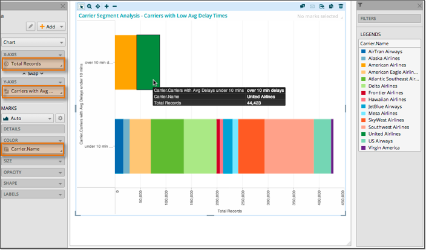

You can supplement the data in a lens by creating or importing segments into the
lens. A segment is a special type of dimension field that you can create to group together
members of a population that meet some defined common criteria. A segment is created from a
referenced dataset in a lens (such as carriers) that have some behavioral characteristic in
common (such as being on time).
Create a Segment of Carriers
In this exercise, we will create a segment of carriers that are (on average) less
than 10 minutes late for their departures and arrrivals. The October 2012 Flights
Data lens meets the requirements for defining a segment because:
- It includes references to other datasets besides Flights (the dataset
used as the focus of this lens). In this case, we will define a segment
based on the Carrier reference, which points to the Airline
Carriers dataset.
- The key field of the referenced dataset is present in the lens
(Carrier.Code in this example).
- Select Add Segment from the lens
Add menu.
- Give the segment a descriptive name. You cannot change the name of a segment
after you save it. In this example, the segment is called Carriers with
Avg Delays under 10 mins.
- Choose the dimension dataset you want to segment. In this case we are
creating a Segment of the Airline Carriers
dataset where Carrier exists in this lens built off of the
Flights dataset.
- Define the conditions that carrier must satisfy in order to be included in
the segment. In this case, the carrier is in the segment if their average
arrival delays and departure delays are less than 10 minutes. We are
creating a segment of carriers that usually have on-time flights.
- Define the display values for the IN and
OUT members of the segment. By default, a segment
only shows the IN members. Deselect the check-box if
you want to show both the IN and
OUT members.
- Modify the Permission Settings and grant
Own access to the Everyone
group. This will allow all Platfora users full access to this segment.
- Click Save Segment.
- The segment appears as a computed field (in blue) beneath the reference it
was created from.
- It may take a few seconds for the segment to build. When the segment is
ready, you will see an alert in your notification center.
Use the Carriers Segment in a Viz
Once you have created a segment, you can use it in a viz just like any other
dimension field. In this viz we are comparing carriers that are usually on time to
those that are not.
